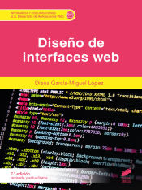

Diseño de interfaces web (2ª edición revisada y actualizada) | Sistemas operativos monopuesto | Hacking etico |
|||
|  | En la actualidad, el mundo web evoluciona constantemente, fusionando información e interactividad, y exigiendo experiencias de navegación memorables y únicas. La segunda edición de este libro sobre diseño de interfaces web se adapta al vertiginoso avance del mundo digital, en el que la interacción en línea es una experiencia cada vez más integral y visualmente atractiva. Además de abordar los fundamentos del diseño web y la implementación de HTML y CSS, esta nueva edición se expande para incluir conceptos avanzados y herramientas modernas. Con un enfoque práctico y orientado a los ejemplos, este libro guía a los lectores a través de la creación de interfaces web modernas y atractivas. Desde los conceptos básicos hasta las técnicas avanzadas, este recurso esencial ofrece una sólida base para los estudiantes y los profesionales que deseen incursionar en el mundo del diseño de interfaces web en la era digital. | En la actualidad, el mundo web evoluciona constantemente, fusionando información e interactividad, y exigiendo experiencias de navegación memorables y únicas. La segunda edición de este libro sobre diseño de interfaces web se adapta al vertiginoso avance del mundo digital, en el que la interacción en línea es una experiencia cada vez más integral y visualmente atractiva. Además de abordar los fundamentos del diseño web y la implementación de HTML y CSS, esta nueva edición se expande para incluir conceptos avanzados y herramientas modernas. Con un enfoque práctico y orientado a los ejemplos, este libro guía a los lectores a través de la creación de interfaces web modernas y atractivas. Desde los conceptos básicos hasta las técnicas avanzadas, este recurso esencial ofrece una sólida base para los estudiantes y los profesionales que deseen incursionar en el mundo del diseño de interfaces web en la era digital. | En la actualidad, el mundo web evoluciona constantemente, fusionando información e interactividad, y exigiendo experiencias de navegación memorables y únicas. La segunda edición de este libro sobre diseño de interfaces web se adapta al vertiginoso avance del mundo digital, en el que la interacción en línea es una experiencia cada vez más integral y visualmente atractiva. Además de abordar los fundamentos del diseño web y la implementación de HTML y CSS, esta nueva edición se expande para incluir conceptos avanzados y herramientas modernas. Con un enfoque práctico y orientado a los ejemplos, este libro guía a los lectores a través de la creación de interfaces web modernas y atractivas. Desde los conceptos básicos hasta las técnicas avanzadas, este recurso esencial ofrece una sólida base para los estudiantes y los profesionales que deseen incursionar en el mundo del diseño de interfaces web en la era digital. |
||